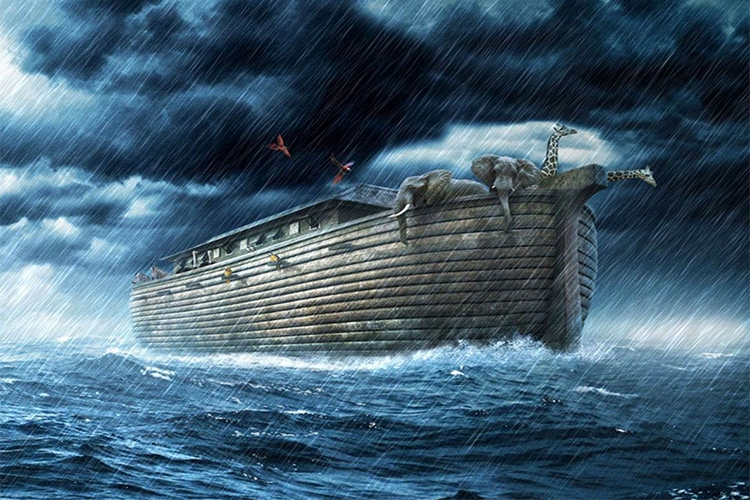

El Diluvio, también conocido como el Gran Diluvio, es una catástrofe mundial mencionada en diversas culturas y religiones. Según relatos bíblicos, el Diluvio fue un evento catastrófico en el cual Dios envió un gran diluvio que cubrió la Tierra, destruyendo toda la vida, excepto la que se salvó en el arca de Noé.
Se cree que esta catástrofe ocurrió hace miles de años, y muchas culturas tienen sus propias versiones y relatos sobre un diluvio global que cambió el curso de la historia humana.
Impacto en la Historia y la Cultura
El Diluvio ha dejado una marca indeleble en la historia y la cultura de muchas sociedades. Desde la historia bíblica de Noé hasta los mitos sumerios del diluvio de Ziusudra y las leyendas mesopotámicas de Gilgamesh, la narrativa del Gran Diluvio ha perdurado a lo largo del tiempo.
Además de su importancia religiosa, el Diluvio ha sido tema de debate entre científicos y arqueólogos, quienes han intentado encontrar evidencia de un evento catastrófico global que pueda haber inspirado estas antiguas leyendas.
El Diluvio Bíblico, narrado en el libro de Génesis en la Biblia, ha tenido un impacto significativo en la historia y la cultura, tanto en el ámbito religioso como en el secular. Aquí hay algunos aspectos del impacto del Diluvio Bíblico:
- Influencia religiosa: El Diluvio es un evento fundamental en la tradición judeocristiana. En el judaísmo, el Diluvio se considera un evento histórico y es mencionado en otras escrituras judías además de la Biblia, como el Talmud. En el cristianismo, el Diluvio es visto como un evento de juicio divino y como parte del plan redentor de Dios para la humanidad. Además, el Diluvio ha sido un tema recurrente en la predicación y enseñanza religiosa, sirviendo como una lección sobre el pecado, la justicia divina y la salvación.
- Arte y literatura: El Diluvio ha sido un tema popular en el arte y la literatura occidentales. Desde la Edad Media hasta la era moderna, artistas y escritores han representado el Diluvio en pinturas, esculturas, poesía, teatro y novelas. Por ejemplo, obras clásicas como "El diluvio" de Miguel Ángel y "El diluvio" de William Blake son ejemplos destacados de la influencia del Diluvio en el arte occidental.
- Mitología y cultura popular: El relato del Diluvio ha influido en la mitología y las historias de numerosas culturas en todo el mundo. Muchas culturas tienen sus propias versiones de un gran diluvio que destruye la tierra y purifica la humanidad. Estas historias a menudo comparten similitudes con el relato bíblico, lo que sugiere que el Diluvio puede haber sido un evento histórico real o que refleja experiencias ancestrales compartidas por diversas culturas.